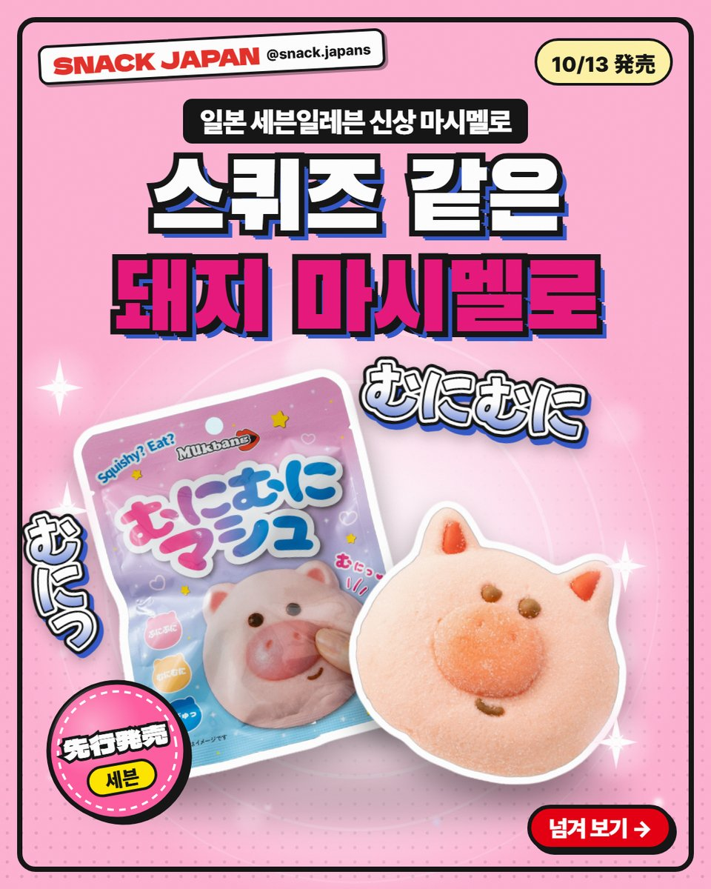
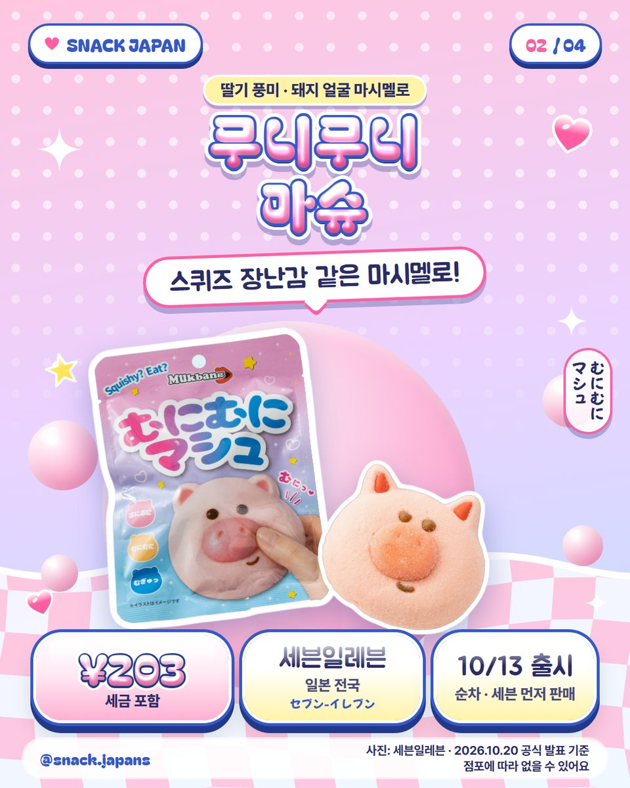
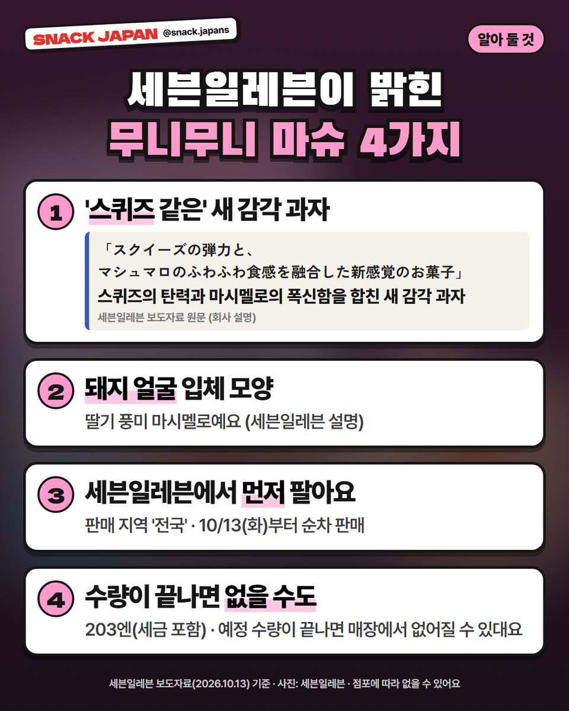
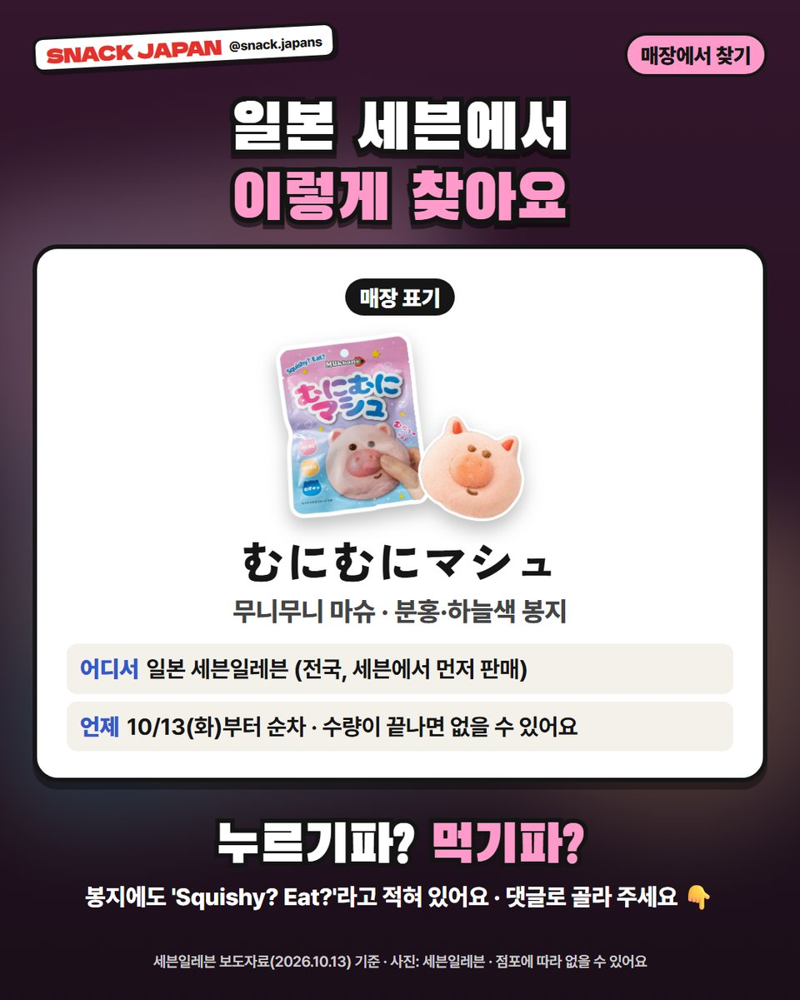

일본 세븐일레븐 무니무니 마슈 출시, 스퀴즈 장난감 같은 돼지 마시멜로
10/13부터 순차 판매 중! 세븐일레븐에서 먼저 파는, 돼지 얼굴 모양 딸기 풍미 마시멜로예요.
누르면 '무니무니', 먹으면 폭신?! 🐷
스퀴즈 장난감 같은 마시멜로가
일본 세븐일레븐에 나왔어요.
돼지 얼굴 모양이라니, 사진만 봐도 귀엽지 않나요?
세븐일레븐 보도자료 기준으로 정리해 볼게요!

1. 10/13부터 순차 판매 중!
- 파는 곳: 일본 세븐일레븐 (세븐일레븐에서 먼저 판매)
- 판매 지역: 일본 전국
- 출시: 10/13(화)부터 순차
- 일본 이름: むにむにマシュ
- 가격: 사진 카드에 정리해 뒀어요

2. '스퀴즈 같은' 새 감각 과자래요
세븐일레븐 보도자료에
'스퀴즈의 탄력과 마시멜로의 폭신한 식감을 합친 새 감각 과자'라고
직접 나와 있어요.
- 돼지 얼굴 입체 모양
- 딸기 풍미 마시멜로 (세븐일레븐 설명)
- 봉지에 'Squishy? Eat?'라고 적혀 있어요

3. 수량이 끝나면 없을 수도 있어요!
준비한 수량이 끝나면
매장에서 없어질 수 있대요 (세븐일레븐 설명).
세븐일레븐에서 '먼저' 파는 상품이라
다른 곳에서 언제 파는지는 아직 발표가 없어요.

4. 매장에서 찾는 법
- 일본 이름: むにむにマシュ
- 분홍·하늘색 봉지
- 점포에 따라 없을 수 있어요
총평
- 기준: 세븐일레븐 보도자료(10/13), 10월 20일 확인
- 참고: 몇 개 들었는지(내용량)는 공식 발표에 없어요
- 추천: 귀여운 과자 모으는 분, 일본 편의점 신상 구경하는 분
사면 먼저 눌러 볼 거예요, 바로 먹을 거예요?
누르기파 vs 먹기파, 댓글로 알려 주세요 🐷